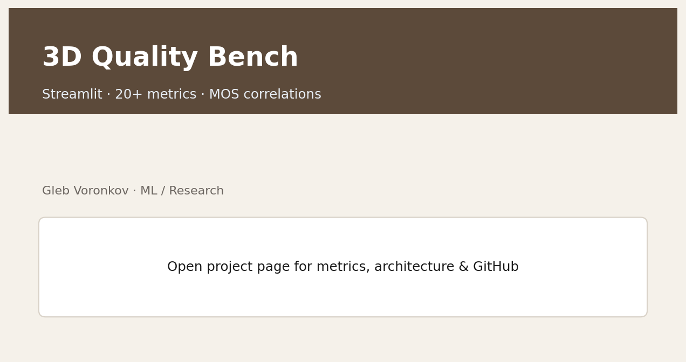
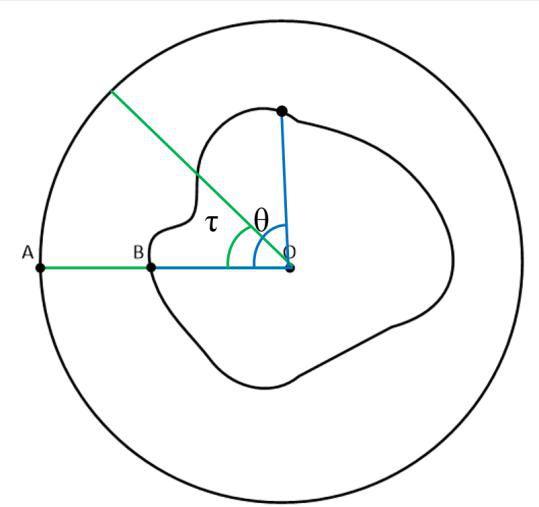
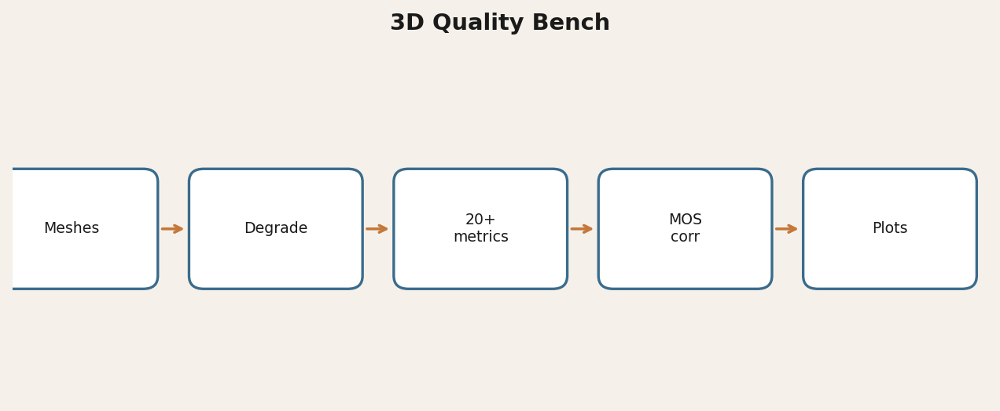

Problem
Research on 3D user assessment for XR needs a reproducible degrade → measure → correlate loop. Classical video metrics were largely built for 2D sequences.
From the XR assessments paper: most existing metrics “were created to meet the needs of two-dimensional systems,” motivating 3D-aware methods tied to user preference.
Approach
20+ metric wrappers (including the PLER family), controllable degradations, and PLCC / SROCC / Kendall helpers versus MOS.
Results
- Tiny fixtures shipped; large meshes stay local
- Cross-linked with PLER and related Scopus work on user assessments
Non-commercial research license.